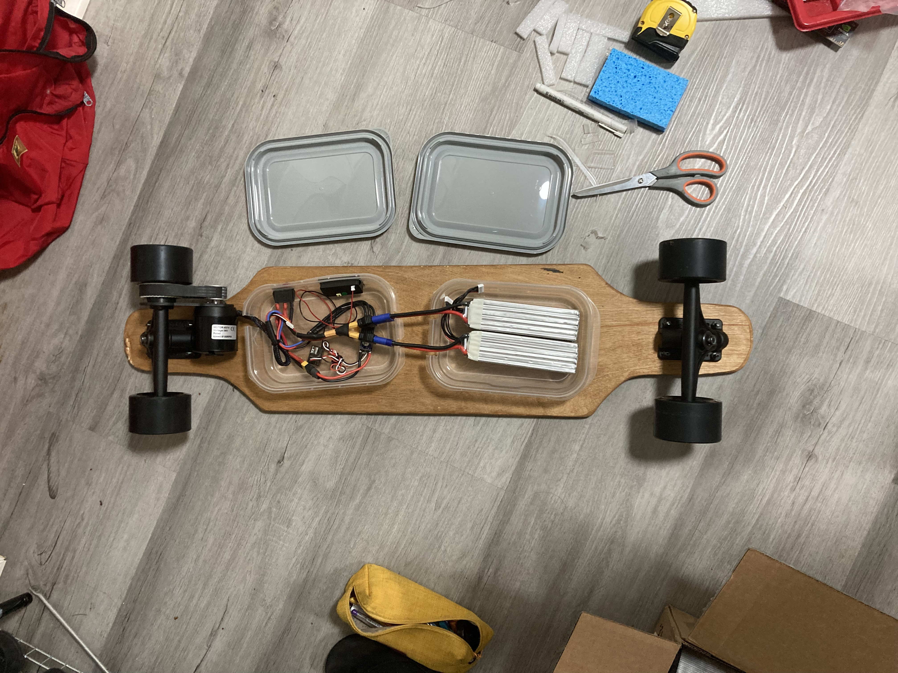
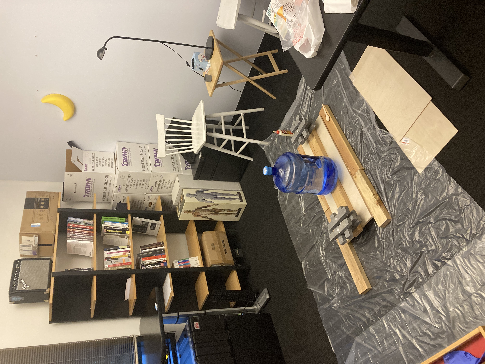
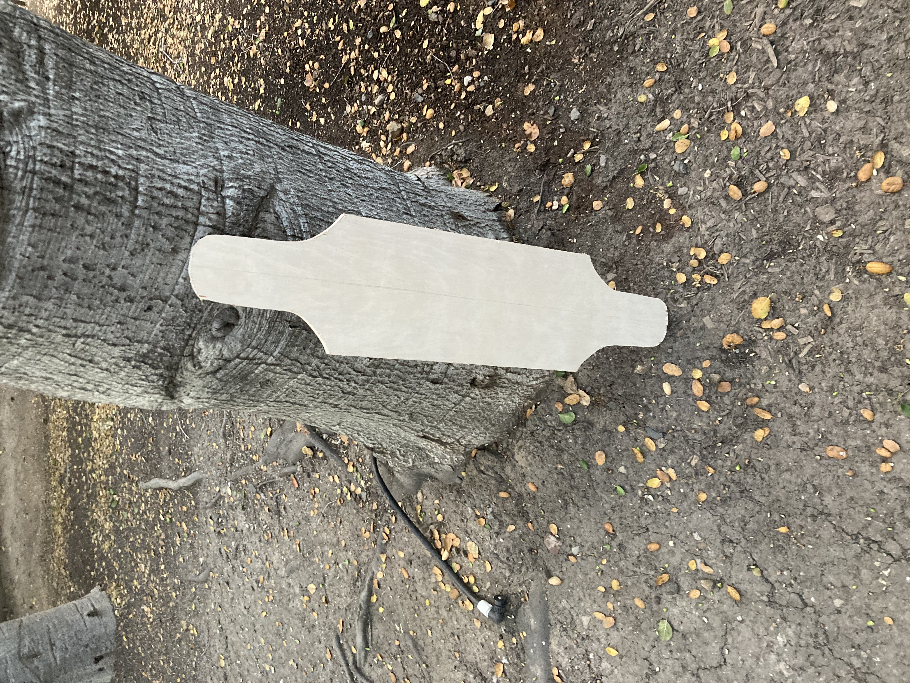
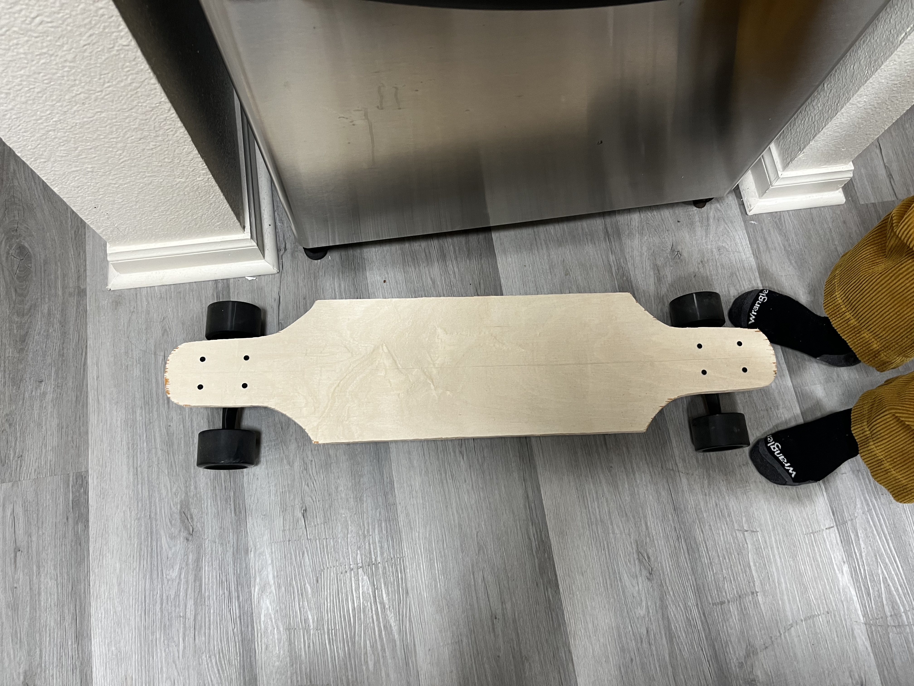
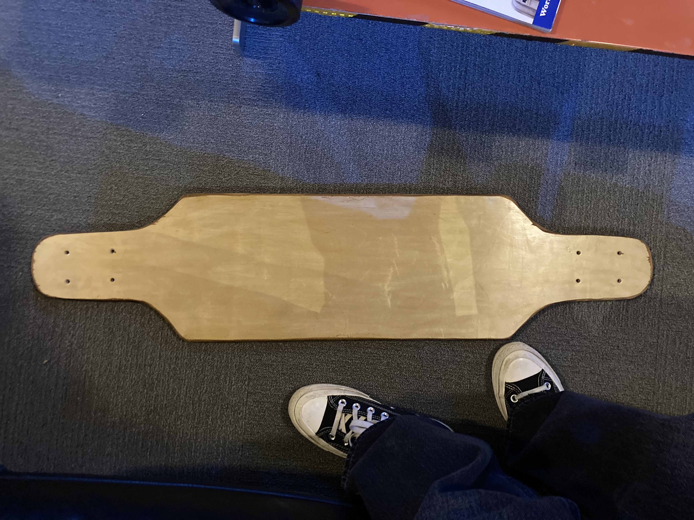
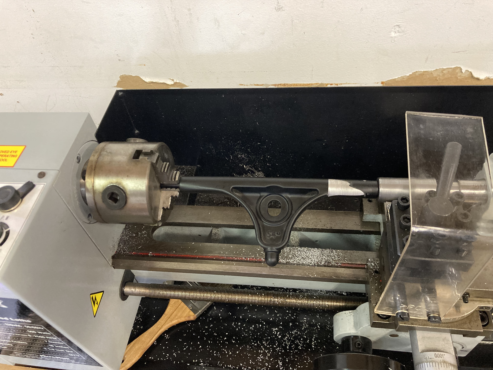
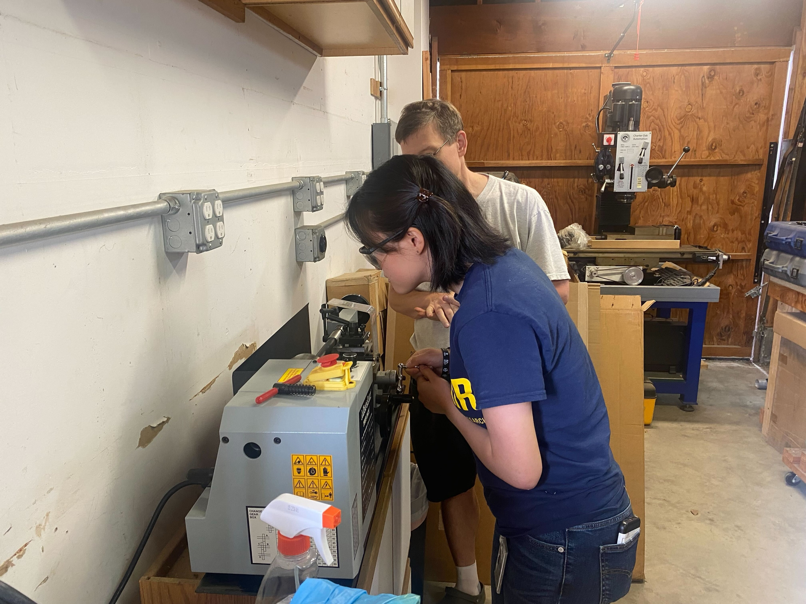
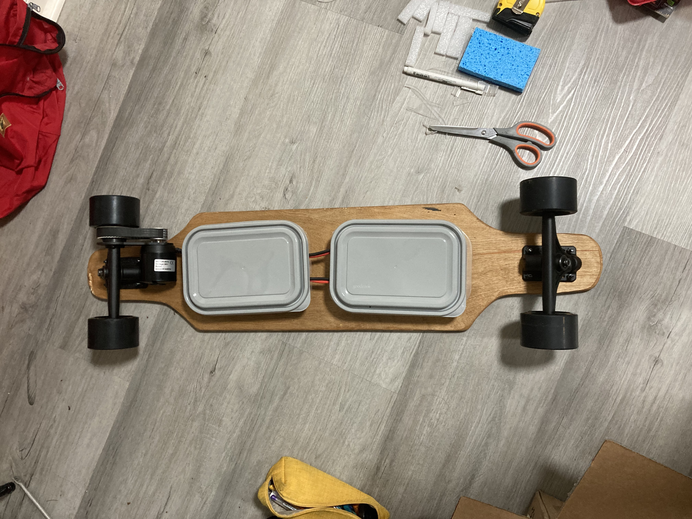
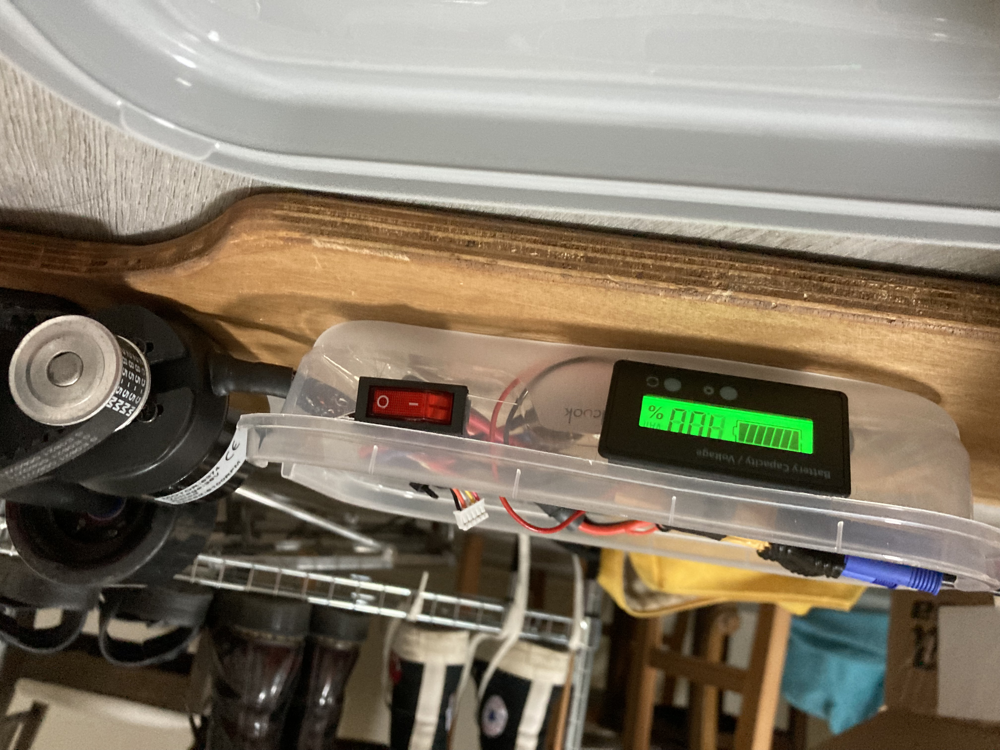

Homemade Electric Skateboard

Blog to be written b/c I'm not done painting it yet, but for now enjoy some pictures! Special thanks to Psy Delacy, Mark Hessler, Alonso Martinez, and Kurt Fleischer for helping out.

Got some 48"x12"x0.25" Baltic Birch plywood from Home Depot, then stacked them together and glued them up. I wanted the deck to have a concave profile, but I realized I didn't have any clamps. So a dear colleague at Pixar lent me 40 lbs of lead bricks to weigh down the middle into a curved shape while the glue dried. That wasn't enough, so I also put a 5 gal water dispenser on top of it too.



Then I cut up the glued stack, sanded it down, and added the wheels. It was now rideable! I practiced my longboarding skills and fell a lot. But then I wanted to go FASTER. So I bought 2 6S2P lipo batteries, a balance charger, a C6374 motor, a ESC, and a remote control to convert it to electric.


One big problem was that the motor mount I got had a collor that was too small for the trucks, so I had to turn it down with the help of Mark Hessler's small but mighty lathe. Photo cred to Kurt Fleischer (and thank you for your moral support and suggestions on this project!)
It spins! But now I need to figure out the electronics housing.


TODO: paint, grip tape, get a smaller belt that doesn't skip, LOCTITE EVERYTHING